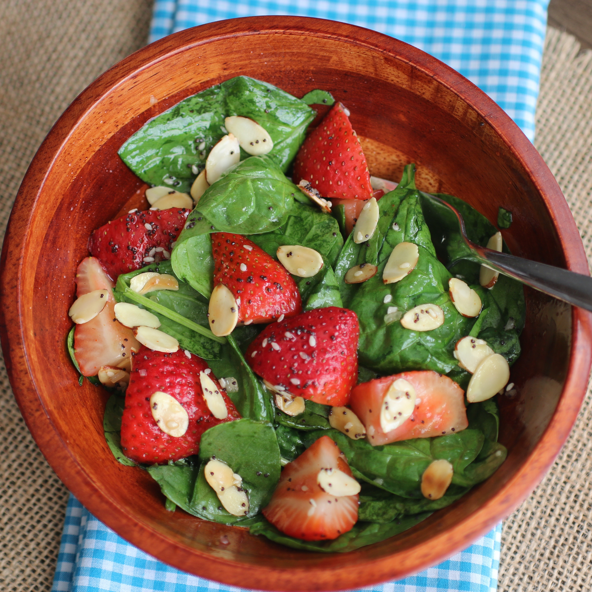

Strawberry Spinach Salad

The best summer salad - Strawberry Spinach Salad.
Just perfect for lunch when it's 105F outside, please yourself with strawberries, spinach, and almonds tossed with homemade poppy seed dressing.
To get kids or even older non-enthusiasts to eat spinach, serve them this strawberry spinach salad. They will love it!
Ingredients for 4 servings
- ½ cup white sugar
- ½ cup olive oil
- ¼ cup distilled white vinegar
- 2 tablespoons sesame seeds
- 1 tablespoon poppy seeds
- 1 tablespoon minced onion
- ¼ teaspoon paprika
- ¼ teaspoon Worcestershire sauce
- 1 quart strawberries - cleaned, hulled and sliced
- 10 ounces fresh spinach - rinsed, dried and torn into bite-size pieces
- ¼ cup almonds, blanched and slivered
Steps
-
Make dressing: Whisk together sugar, oil, vinegar, sesame seeds, poppy seeds, onion, paprika, and Worcestershire in a medium bowl. Cover and chill for 1 hour.
-
Make salad: Combine strawberries, spinach, and almonds in a large bowl.
-
Pour dressing over salad; toss to coat. Refrigerate for 10 to 15 minutes before serving.